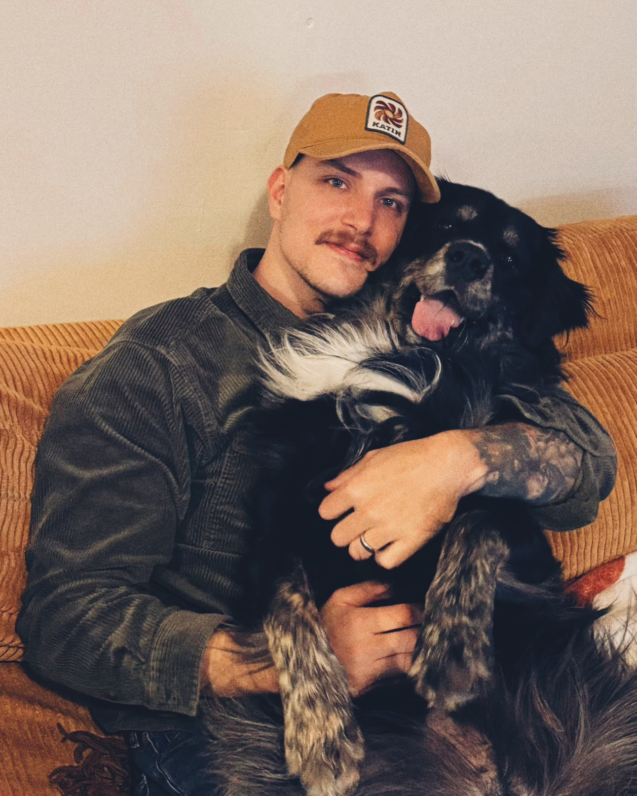

A FEW WORDS ABOUT ME
Hey, My name is Adam and I'm interested in becoming a Wed Developer. I'm currently a second year student at the University of Alabama in Huntsville pursuing a degree in Computer Science.
When I'm not learning about Web Development, I'm either taking photos, making digital art, or spending time with my doggos.
TL;DR?!

- Web Development
- Photography
- Digital Art
- My Doggos